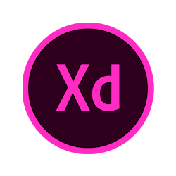
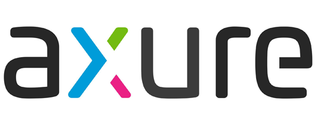
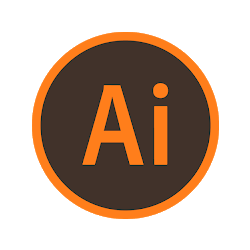

Case study 2
MAPFRE MSV Life Insurance - Agent portal
MAPFRE MSV Life Insurance has offered a wide range of insurance packages through a well establised network of independent agents and brokers. MMSV is looking to expand their market share by introducing new technology in client dealing.
DOMAIN:
Insurance
PROJECT TYPE:
Responsive Web application
USER:
Insurance Agent
MY ROLE:
Requirement analyse, UX Research and User Testing, Leading the teams for- Problem solving, Sketches, maping, Wireframe, Visual designig and Interactindesigning.
Phase 1- Define Requirement and first level of Maping
Background: Agent portal is a Responsive web application for the use of insurance agents.
By this applicatin the agents are able to save and retrive the data of their clents, apply for quotes and then policies.
Some policies are complex to manage because the of its nature with sponcers, third party owners and payers.
Product story: Get Quote and Policy
User story: Agent is the User.
Applicant is the main character.
The policy owner, payer, beneficiaries etc are the supporting chatacters in this story.
User has to connect the applicant with other charactors at the stage to reach applicant's journey to reach the climax.
The purpose of inquiry is to find the best position you can start to plan and execute a project.
Questions
Answers
My role
Success
How will success be measured?
Function better, efficient, constant and inspire the client.
Ensure success by designing and evaluating.
About the project
Why do the Company needs the project?
Providing a platform to agents for manage their service more efficient and effortless.
Design lead.
What does the organization value the most? Branding? Content Strategy? Customer feedback? Time to market?
Content Strategy.
Collaboration, Ideate and impliment.
Is the project a redesign, a facelift, starting a new product from scratch?
A new product.
--
Is there a product, app or website you can review to learn about the problem?
Yes - Website.
Research
Does the document specify artifacts/deliverables and deadlines?
Yes Provided
Collaboration
Branding
What are the key branding elements of the organization?
Color, Font, Tone of voice.
Implimentation
What are the resources you can get from the organization in terms of brand?
Brand guides.
Collaboration.
About the Users/
Potential users
What previous research efforts have been made to learn about users?
Only some short reports available on enquiry.
Collaboration.
What data available to learn about users?
Persona
Collaboration.
Do they have personas? User profiles?
Yes.Provided on request.
Collaboration.
Who in the organization has more interaction with users? Front-desk employees? Customer support?
Customer support.
Collaboration.
What are the behaviors/goals/pain points of users?
Customer care, Sale, Save timespending to reach.
Ideate.
What progress are they trying to make?
Suggestions, hints, autofill, responce.
Design experience
About Technology
What is css framework to be used?
Bootstrap 4
Design to ensure the wise use of framework capabalities.
What are the skills want to execute this project?
Research, Management, Design.
Research and Design.
What are the licenced software available?
Adobe cc- Photoshop, Illustrator, XD,Axure, MS Office.
Collabotate with IT infrastructure team.
What are the licenced software needed?
Adobe cc- Photoshop, Illustrator, XD,Axure, MS Office.
Get installed with Manager approval and through IT team.
What is policy of using free licenced sofwares?
With approval of Manager.
Get approval.
Is the team complete?
Yes.
Figure out the future requirement and report to the manager.
Will the client provide their own resources? How the collaboration will be?
No
About Myself
What does your team know about yourself?
Lead designer
What are my strengths that can contribute to the project?
Design / Researchexperience, Visual design Experience, Frame work knowledge.
The main objective of foundation work is to build shared understanding within the team for common vision.
Foundation work requires humility; being humble enough to acknowledge the team.
Automation is based on systems (collaboration system with teams) thinking.
It is the Designing of the design process.
Automation requires leveraging - project management, development and business teams to work together as a whole.
Deliverables: Competitive Analysis,
Personas,
Storyboard,
Sitemap,
User and Task Flow,
Wireframes,
Branding/ UI Kit,
High- Fidelity Design.
Time scales:
| Time span |
Description |
Time line |
| Span 1 |
Define Requirement and first level of Maping. |
10 Days |
| Span 2 |
User research - Personas - List out Problems - Empathy maping. |
10 Days |
| Span 3 |
Analysis -Reframing- Mindmaping- Scenarios - Userstories. |
20 Days |
| Span 4 |
Design Sketches - Wire-framing - Define style and brand - Highlevel wireframe - Interactive prototype. |
20 Days |
| Span 5 |
Delivery -Test- Production. |
- |
Concept, Information flow, Mind map:
Concept is the foundation of any successful design — it’s like design DNA. The concept provides the direction for the entire project.
Login - Dashboard
Dashboard - My work place, New, Policy enquiry
My Work place - My policies, My quotes, My applications, My profile
New - New Quote apply, New policy Application
New Quote- Suitabilty check, Policy suggestion, Cover details, Applicant/s details, Quote Number.
New Application- Quote details - Applicant/s -Policy owner/s - Payer/s - Beneficiaries - Questionnaires- documents - Summury - Submit.
Login - Dashboard
Dashboard - My work place, New, Policy enquiry
My Work place - My policies, My quotes, My applications, My profile
New - New Quote apply, New policy Application
New Quote- Suitabilty check, Policy suggestion, Cover details, Applicant/s details, Quote Number.
New Application- Quote details - Applicant/s -Policy owner/s - Payer/s - Beneficiaries - Questionnaires- documents - Summury - Submit.
Phase 2- Research - Personas - List out Problems
Market research:
After the market research, I found companies that had a number of financial literacy/ management or saving features.
|
competitor 1 |
competitor 2 |
competitor 3 |
| Strengths |
Clean ul
Clear explanations of services and
"Find Savings" features |
Automatic saving; good for beginners.
Clean ul
Found' Money from participating
companies.
New debit card/ investments product |
Some of the highest interest rates for
savings accounts.
Goal setting feature
Credit card with cashback |
| Weaknesses |
Users find the reports and set up time
to be intimidating.
Relies on the connection between
banks and credit cards.S0rnetirnes the
API connection fails.
Doesn't provide past spending data.
|
Very small amounts Of money. May
give users a false sense of security.
Charge for service With an extra layer
of investment fees. |
Doesn't have a lot of personalization
features Or advice
Low cash back rate,
No Brick and Mortar locations
No clear value props or differentiators |
| Observations/
Opportunities |
Find savings feature helps users find
better rates on cc or savings
accounts.Personalized tips on how to save
more money based on your
demographic and spending habits. |
Gamifying' saving
Easy to understand. uncomplicated
concept millennials respond to, |
Not a lot of new products or innovation
coming out of Ally. They do market well
to millennials in their UI and interest
No mortgage loans. CaptialOne is still
the leader in this
Capital One can advertise mortgage |
| Threats |
Established among millenial market. Improvements to bank API's can be
made quickly. More comprehensive product |
Smaller feature that processes an
automatic result |
Established among millenial market. Can add features fairly quickly
Their investment focused message
could allow this feature to be |
User Research:
To start off my user research phase of the project, I wanted to interview boath gender and different age group. I want to ensure that some of them are the existing users and sothers are new to use the similar application.
| 0 50% |
of their customers having sponcers as ploicy owners and payers. |
| 0 60% |
of customers managed throuh online |
| 100% |
said that they need an option to save for later the data entered to take breaks and need to aware of where they are when back to work. |
| 080% |
participants want get clarity of criteria of data to be entered and possible the errors may happened. |
| 0 60% |
said they should able to modify the fields once entered. |
| 100% |
of participants said that they want reduce the effort of typing the similar/ same data enter again and again. |
| 100% |
of participantslike to get emotional reactions when I am interacting. |
| 0 75% |
want to see the summary at last before the final submission. |
I condensed these insights into three needs:
| Need 1 |
Need 2 |
Need 3 |
| Users need to be able to track quotes and policy |
Make their life easier to impliment autofill and tooltips, responce, auto save, and interactions on the journey |
Find simple waysto adding third party owners and payers. |
User Persona:
Alex
Insurance agent
DedicateHard worker
Adventure
Technically- savvy
|
About
Alex is a 50 year old Insurance agent. He is interested in current tech trends, video games, and new invesment oppertunities.
He keeps up with his wife, but doesn't worry too much about money or saving beyond his actual needs.
Goals
As a professional he is focused on expanding his busi-ness, and more concerned with sharing experiences.
With a large number of corporate and individual clients, he has to deal with multiple profiles and needs in a single platform.
Needs
I have to sit with the client and enter the details by using a Tab, and offer the exact product matching to the clients requirements.
I need an attractive with eye catching sections in design.
I need an option to save the entered data for later.
The page should me give the navigational details . I need to aware of where I am at presently.
I want get clarity of criteria of data to be entered.
I want reduce the effort of typing the similar/ same data enter again and again.
As an agent I can modify the fields once entered.
I like to get emotional reactions when I am interacting.
I want to see the summary before the final submission.
Frustrations/ Fears
He wants time to travel and experience life. When ever dealing with his clients,
wasting time with dataentering, not getting correct responce for his actions from system, losing data while.
|
Phase 3- Analysis -Empathize - Flow charts - User Stories - Scenarios
Empathy map:
Think & feel
• What the Agents think about the task?: Great
• Stressed / relaxed while doing the job?: Presently stressed
• What is the customer concerned about or afraid of?: lot of data to enter and lose
|
Hear
• Would they like to voice responce while work?: Yes
• Are they like to sounds than visuals?:No
• How does they like to get information-Read or hear?:Read
|
See
• Looking for something as great visual/
if so what is that?: Yes. Simple and Elegent
• Does your customer spend more time
in the public or in private?: public
• Is they more pvt/ public in terms of visuals?: Private
• What does your customer’s
ideal environment look like?: Clear sky with calm wind
|
Say and do
• What they telling to others in their
daily actions?: Stressed but finised
• How does the customer portray themselves
in front of others?: Quietly and listening
• What words does the customer use when talking?: Sales promoted
• What does your customer’s
ideal environment look like?: Clear sky with calm wind
|
Pain
• Where they feeling worst / like not to be?: Lose of a deal with laziness
• What are the barriers to moving?: Not informed properly
• Why not obtain success?:Stress
• What methods does the customer use
to achieve success?:Fast actions
|
Gain
• Where they feeling proud/ like to be?: Finished a great deal.
• How is success measured and what does it look like?:----
• What methods does thy use to achieve success?: Follow up
|
Reframing
After some brainstorming, I wrote down ideas that would help each category of Needs.
• Need 1:
User can track the status of policies and quates fromm Dashboard aswell as My workplace.
Apart fom datavisualization the notifications are there in display.
|
• Need 2:Data can retrieve from Applicants quote by a reference number.
Progress stepper, error/ success notifications, Suitabilty checker, autosave for the with ref.no, |
• Need 3: It is mandatory to add policy owner and payer. Applicant can be the Policy owner and payer jointly or single,
Applicant can add a third party as the policy owner and payer. The policy owner and payer can be the same source or different.
|
Goals
I had to set out clear goals for the project ahead to ensure I can create a great product and the user while keeping any technological constraints in mind.
Next, I defined the features that would satisfy the user needs (" How can this help Alex and others?"), while keeping the business goals, time and technological constraints in mind.
Flow charts
Mind map- for Single applicant
Mind map- for Joint applicants
User stories
User stories are created to define the requirements prior to a sprint in agile development.
The given below context ia a sample story
As a Sales Agent:
I want to see my profile info in My Dashboard.
So that, I can keep track of the accuracy of the information, modification can be done via portal along with the ability to update the password.
Description: Story to implement the agent (my) profile to be displayed in the My Profile Section.
Scenario
Scenarios are created by user researchers to help communicate with the design team.
The given below ia a scenario in a tracking software 'Jira board', where the scenarios published.
Agile collaboration with design team
Phase 4- Design:
Sketches - Wire-framing - UI Kit - Highlevel wireframe - Interactive prototype.
Sketches
I spent extra time sketching out wireframes to find the best possible structure and presentation of information.
First level Wireframes
I spent extra time sketching out wireframes to find the best possible structure and presentation of information.
The skills and softwares used:
| Adobe XD |
Axure |
 |
 |
Style guide/ UI Kits
I wanted to be clean, professional and as minimalist as possible.
I chose a light with brand color red, and used fonts that weren't too playful to convey a sense of professionalism and trustworthiness.
These were themes I found in my user research, and kept them in mind throughout the design process.
The skills and softwares used:
| Adobe Illustrator. |
Adobe Photoshop |
Adobe XD |
 |
|
|
Color pallet
Layout
Fonts
Buttons
Forms
High-fidelity visual designs
After finalizing the UI kit, I created the high-fidelity mockups for the next stage, user testing.
Dashboard
Demand and need assessment
Product details
Application
Phase 5- Usabilty test, Final design and Inerative prototype
User Testing
Goals:
Improve the user experience by running usability tests on as many people as possible in a 1 week timeframe. From the feedback, I would iterate and improve my design.
Methods:
Attitudinal Survey
Behavioral Qualitative
Behavioral Quantitative
Tracking Softwares Used for the survey: Qualtrics XM
The necessory changes hesbeen done based on the surbey.
Interactive Prototype
Created an interactive working prototype as the model app with Adobe XD.
Production support
Published the style guide in Zeplin and Adobe XD and CSS help.